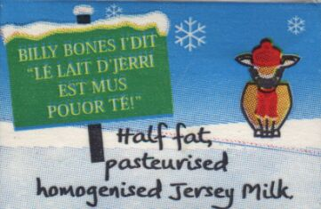

Y'a dans les quatre ans j'donnis la r'chette comme tchi qu' nou faîthait l'pain (comme tchi qu'nou fouôngnait) aut'fais en Jèrri.
Y'a dans les quatre ans j'donnis la r'chette comme tchi qu' nou faîthait l'pain (comme tchi qu'nou fouôngnait) aut'fais en Jèrri.
Car tout ch'la, comme tant d'aut' choses, s'en va êt' tout à fait oublié un co les vielles gens hortes. Eh bein, il en est d'même quant à la faîth'thie d'beurre. Combein tch'il s'trouv'thait d'gens au jour d'aniet tchi saithaient comme tchi faithe lé bouôn beurre dé fèrme?
Y'en a acouo hardi d'entre nous tch'ont veu tout ch'la aut'fais, mais y'a dêjà longtemps, dgia, qué les pots à lait en tèrr'rie, les selles à beurre et tout l'bataclian ont 'té mîns d'côté ou fliantchis hors.
Et où'est tch'est l'temps des halles à beurre, dans l'marchi à beurre en ville, et des vend'rêsses dé beurre? Ah, tout dispathu étout! Nou peut dithe qué ch'la s'n allait à grands pas dévant la dreine Dgèrre. Mais, ma fé, quand vînt l'Otchupâtion d'l'Île par les Allemands, hardi d'gens lus r'mîndrent à faithe lé beurre; en cachette, bein seux - pouor ieux-mêmes ou en êchange pouor aut's choses. Un co la Dgèrre finnie, v'là tchi cêssit, et il est probabl'ye' tch'i' y'eut bein p'tit d'fèrmiéthes tchi continnuîdrent à faithe lé beurre auprès ch'la.
 Eh bein, don, né v'chîn comme tchi qu' nou s'y prannait. Les traites dé lait du matîn et du sé 'taient mînses en pots (des pots à l'exprès) à prendre. Lé jour en r'vénant nou-s-êcrémait, en fliantchant la crème atout eune pétite souôtâsse dans un pus grand pot appelé un bro ; mais fallait qu' lé lait fûsse bein cailli. J'dévthais p't-êt' dithe qué l's uns faîthaient l'beurre eune fais, d'aut's deux fais la s'maine. Quand la crème avait meûthi (i' lî fallait à bein près deux jours) oulle 'tait prête. Nou la m'ttait à la selle atout eune quantité dg'ieau - fraide en êté et caûde en hivé - ayant prîns bouôn soin d'êcaûder ou suer la selle atout dé l'ieau bouoillante et pis d'la r'fraidgi atout d'l'ieau fraide. Auve lé but d'san dé nou jugeait à bein près la tempéthatuthe nécessaithe. Nou touônnait la selle jusqu'à qu' v'là tchi fûsse en gros brîns et pis pas longtemps auprès lé beurre s'assembliait. La touônn'nie d'amors prannait vîngt minnutes ou démi'heuthe. Nou halait l'lait d'beurre dé d'dans la selle, et nou lavait bein l'beurre atout dé l'ieau dévant l'pêtri. Dévant aller pus liain i' faut qué j'diche qué, aut'fais, ch'tait eune selle à tuthet tch'était en usage, et pis étout la bathette tchi vînt longtemps dévant la selle. Y'avait, bein seux, un appartément spécial où'est qué s'faîthait tout l'tripot tch'était connu comme la lait'tie. Mais continnuons. Nou pêtrissait l'beurre dans la tèrrinne atout la tchulyi à beurre et nou l'salait. La préchaine chose 'tait dé l'livrer (à la livre Jèrriaise) et l'mèrtchi ou êtamper atout un mèrtcheux en bouais à l'exprès auve lé nom et la pâraisse du fèrmyi. Pis il 'tait env'loppé dans du papi à beurre, tout prêt pouor porter au marchi dans l'grand pangni à beurre. I' s'vendait dans les dgiex-huit à vîngt sou la livre, dévant la preunmié Dgèrre.
Eh bein, don, né v'chîn comme tchi qu' nou s'y prannait. Les traites dé lait du matîn et du sé 'taient mînses en pots (des pots à l'exprès) à prendre. Lé jour en r'vénant nou-s-êcrémait, en fliantchant la crème atout eune pétite souôtâsse dans un pus grand pot appelé un bro ; mais fallait qu' lé lait fûsse bein cailli. J'dévthais p't-êt' dithe qué l's uns faîthaient l'beurre eune fais, d'aut's deux fais la s'maine. Quand la crème avait meûthi (i' lî fallait à bein près deux jours) oulle 'tait prête. Nou la m'ttait à la selle atout eune quantité dg'ieau - fraide en êté et caûde en hivé - ayant prîns bouôn soin d'êcaûder ou suer la selle atout dé l'ieau bouoillante et pis d'la r'fraidgi atout d'l'ieau fraide. Auve lé but d'san dé nou jugeait à bein près la tempéthatuthe nécessaithe. Nou touônnait la selle jusqu'à qu' v'là tchi fûsse en gros brîns et pis pas longtemps auprès lé beurre s'assembliait. La touônn'nie d'amors prannait vîngt minnutes ou démi'heuthe. Nou halait l'lait d'beurre dé d'dans la selle, et nou lavait bein l'beurre atout dé l'ieau dévant l'pêtri. Dévant aller pus liain i' faut qué j'diche qué, aut'fais, ch'tait eune selle à tuthet tch'était en usage, et pis étout la bathette tchi vînt longtemps dévant la selle. Y'avait, bein seux, un appartément spécial où'est qué s'faîthait tout l'tripot tch'était connu comme la lait'tie. Mais continnuons. Nou pêtrissait l'beurre dans la tèrrinne atout la tchulyi à beurre et nou l'salait. La préchaine chose 'tait dé l'livrer (à la livre Jèrriaise) et l'mèrtchi ou êtamper atout un mèrtcheux en bouais à l'exprès auve lé nom et la pâraisse du fèrmyi. Pis il 'tait env'loppé dans du papi à beurre, tout prêt pouor porter au marchi dans l'grand pangni à beurre. I' s'vendait dans les dgiex-huit à vîngt sou la livre, dévant la preunmié Dgèrre.
Quand l'beurre 'tait à bouôn marchi, quand y'en avait pûtôt un excès, ch'tait là qu'nou lé m'ttait en pot. L'ayant bein pêtri dans l'pot et bein salé, nou faîthait du picl'ye atout d'l'ieau et du sé en l'vèrsant sus l'haut du beurre bein apliati. Comme ch'la i' pouvait duther ofûche siex mais, et nou s'en trouvait bein quand il 'tait à prix fo, ou êcars les vaques étant à sé. I' s'rav'nait c'mode étout pouor d'la fricachinn'nie ou comme affêquement (amendement) pouor d'la gâche dé pâte.
Tchiquefais quand l'beurre avait l'goût d'navets ou d'suidiches l'èrmiède, qué nou dîthait, était d'y mettre un p'tit mio d'salpètre ou nitre pouor ôter l'mauvais goût. En êté étout tchiquefais par la chaleu et p't-êt' manque d'y souongni assez, lé beurre éthait ieu l'goût du meûque. Pouor lé couleuther, quand i' n'tait pon des pus riches, nou-s-avait d'tchi d'siez l'apotitchi dans eune pétite boutelle tch'agissait à mèrveil'ye pouor lé jaûni. Nou-s-appelait chenn'na du safran ou du jaûnisse. Tchiquefais lé lait éthait ieu l'goût d'pipots tchi n'tait pon ni n'tout hardi pliaîthant.
Les cannes à lait 'taient en pâlîn, atout eune êcale dé vanné dans l'couleux pouor empêchi l'lait d'êcliatchi. Lé couleux 'tait fait en taile (souvent d'la taile à couleurs rîlyie en rouoge) et 'tait gentiment soupl'ye pouor qué l'lait pûsse couler l'travèrs. Dé temps en temps eune vaque avait des pêques; ch'est à dithe lé lait 'tait gras et les couleurs graîsseurs, par la vaque à aver du fraid dans l'piéchot, mais l'pus souvent ché n'tait pon rein d'séthieux.

Tch'est qu'nou faîthait du lait cailli? N'faut pon penser qu'nou l'env'yait hors - ah, mais non! Nou l'donnait ès p'tits vieaux ou ès quétots, et même nou-s-en faîthait sèrvi pouor d'la gâche. Lé lait êputhé - ch'tait l'lait cailli êputhé dé s'n ieau - nou l'mangeait à la tchul'lée atout du jaune chucre poudré d'ssus. Lé lait d'beurre, du tèrme, allait pouor les quétots et les p'tits vieaux, sans pâler d'aîdgi étout à faithe dé la gâche.
Né v'là l'histouaithe d'eune aut' pétite partie d'la vie du fèrmyi Jèrriais, tchi, dans l'couothant d'tchiques années dispathut tout à fait, comme j'vouos l'dîthais en c'menchant. Par exempl'ye, dans l'année mil neuf chent trante-chînq i' restait seulement trais bouonnefemmes vend'rêsses dé beurre dans l'marchi - bouonnes vielles èrliques du temps pâssé en Jèrri - et tchiques douzaines dé fèrmes dans toute l'Île où'est tch'i' faîthaient l'beurre.
Acouo eune chose tch'i' faut dithe, et ch'est chennechîn. Lé beurre Jèrriais bein fait, et fait par eune pèrsonne propre, 'tait aussi bouon comme autchun et chent fais miyeu qué toutes sortes d'variêtés d'beurre qué les gens lus sont accouôteunmées à acater dans les boutiques dé nouos jours !
Viyiz étout: